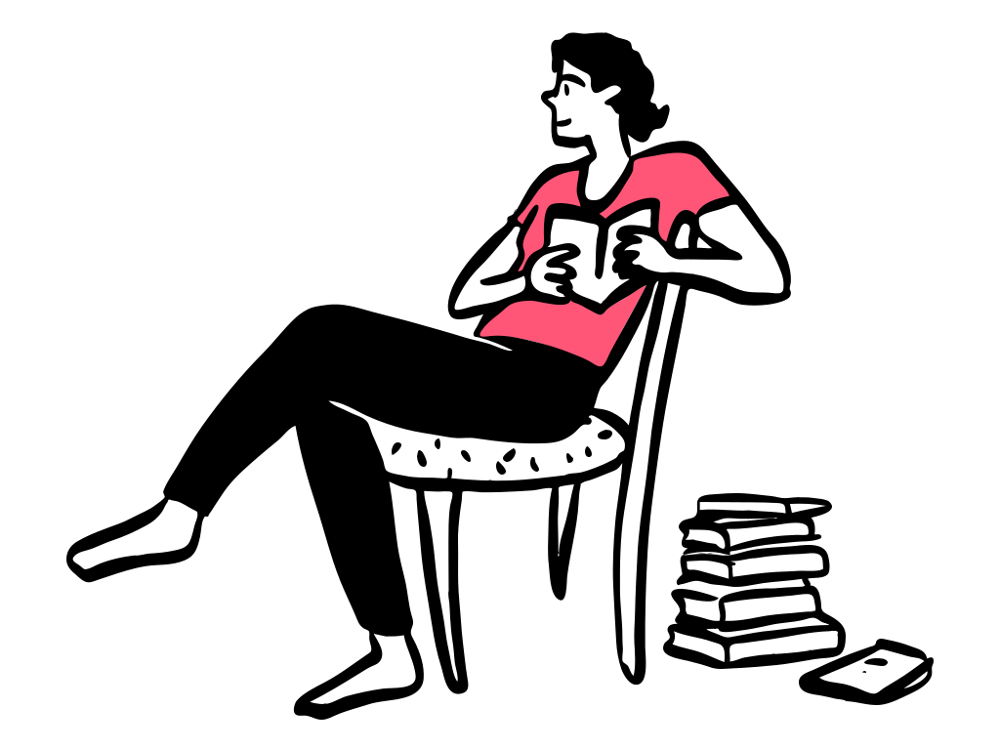
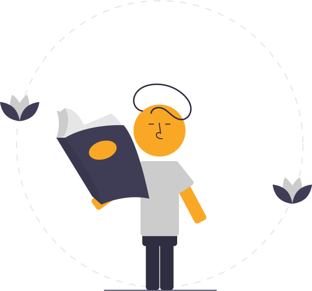
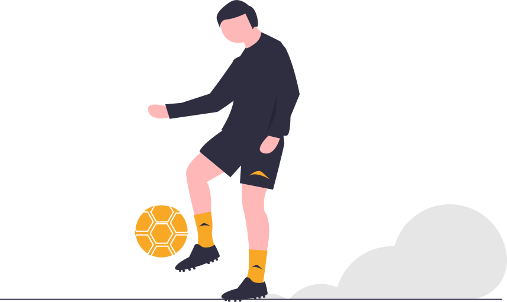

Hi, I'm Yadhukrishnan, the only son in my small, close-knit family. I have a deep passion for reading; books are my escape and my gateway to endless knowledge and adventure. Music is another big part of my life, always providing inspiration and a sense of calm. 

I'm always eager to learn something new and love challenging myself to create innovative things.
Engaging with the latest technologies excites me, and I enjoy exploring how they can be used to solve problems and improve our lives.
Besides my love for intellectual pursuits, I'm also very active in sports. I enjoy the physical challenge and the teamwork involved, which keeps me energized and focused. Whether it's on the field or in front of a computer, I'm always looking for ways to grow, stay engaged, and make a positive impact. 